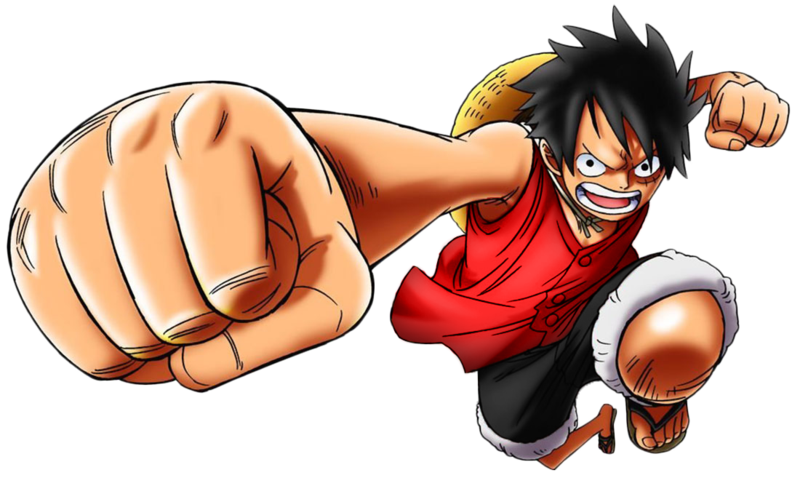

Sobre a obra
Saiba mais sobre a famosa série de mangás escrita por Eichiiro Oda!
Bandos
Quer descobrir quais são os principais bandos de One Piece? Quais são as recompensas dos capitães? Clique e saiba!
Quiz
Clique aqui e descubra qual membro dos chapéus de palha você seria com base em 10 perguntas!